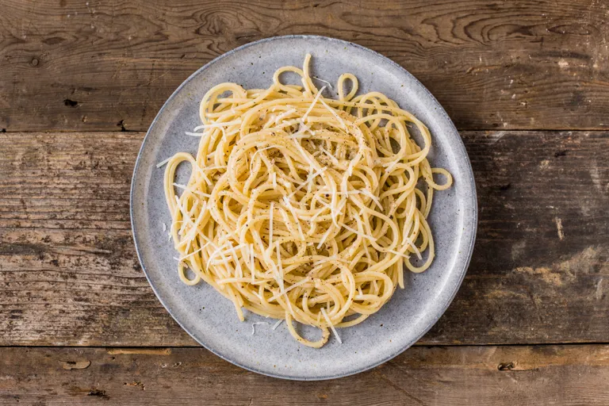

Cacio e pepe

This cacio e pepe recipe is one Rome's four famous pasta dishes,
and one of the most simple in terms of ingredients.
Work quickly to obtain the rich, smooth Pecorino sauce that this dish is known for.
ingredients
- 1 tablespoon peppercorns
- 200g of Pecorino Romano, finely grated (at room temperature)
- 1 tablespoon of butter
- 400g of spaghetti
steps
- Cook the spaghetti in a pan of heavily salted boiling water for 8–10 minutes or as per packet instructions
- Meanwhile, toast the peppercorns in a hot dry frying pan, then transfer to a mortar and pestle and gently crush
- When the pasta is cooked al dente, take a cup of the pasta’s cooking water and set aside. Drain the pasta and leave to steam-dry for 30 seconds
- Melt the butter in the frying pan over a medium-low heat and add the cracked pepper,
then add the pasta along with a few tablespoons of the pasta water. Toss to coat the spaghetti evenly then remove from the heat and stir in the grated Pecorino
- Stir the sauce until the cheese starts to melt and emulsify with the pasta water. Keep adding more water if needed, but make sure it’s nice and hot
- Toss the pasta to coat in the sauce and serve immediately with a little more pepper and grated Pecorino – if it starts to cool, the cheese will solidify